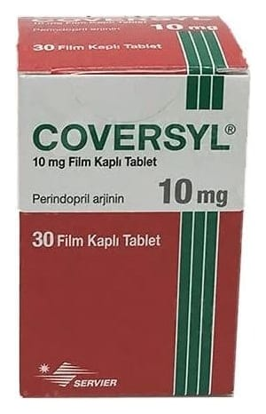

Coversyl 10 mg Film Tablet, 30 Adet

Ne için kullanılır
KT · Bölüm 1 COVERSYL anjiyotensin dönüştürücü enzim (ADE) inhibitörü adı verilen ilaçlar sınıfındandır. Bu tür ilaçlar kan damarlarını genişleterek kalbinizin damarlara daha rahat kan pompalamasını sağlar.
COVERSYL tabletler yeşil, yuvarlak, bir yüzü baskılı, diğer yüzü ise baskılı film kaplı tabletlerdir. Tabletler, beyaz opak kapaklı akış düzenleyicili kutuda 30 film kaplı tablet içeren ambalajlarda bulunmaktadır.
Bu ilaç buzağı kaynaklı laktoz monohidrat yardımcı maddesini içerir. Doktorunuza danışmadan ilacınızı kullanmayı bırakmayınız.
COVERSYL aşağıdaki rahatsızlıkların tedavisinde kullanılır: Yüksek kan basıncının (hipertansiyon) tedavisinde, Stabil koroner arter hastalığı olan (kalbi besleyen damarlarda (koroner arterler) daralma sonucu kalbin kanlanmasında azalma) ve kalp krizi geçirmiş ve/veya kalp kan damarlarını genişletmek için operasyon geçirmiş hastalarda kalp krizi gibi kardiyak olay riskinin azaltılmasında.